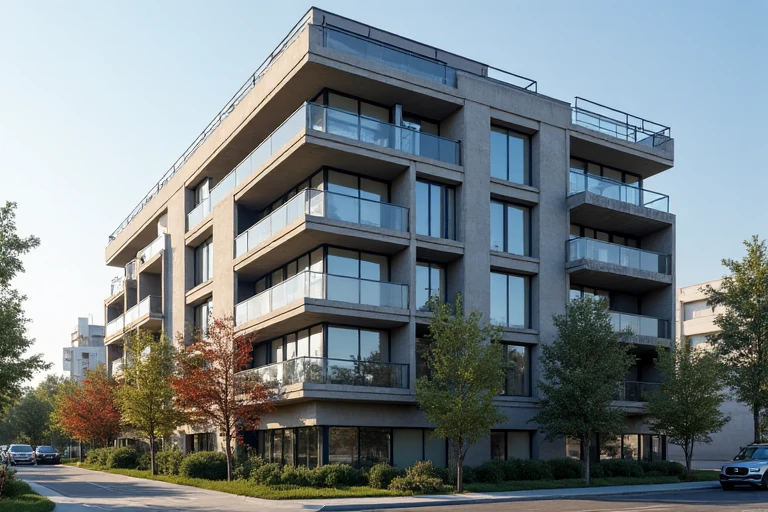
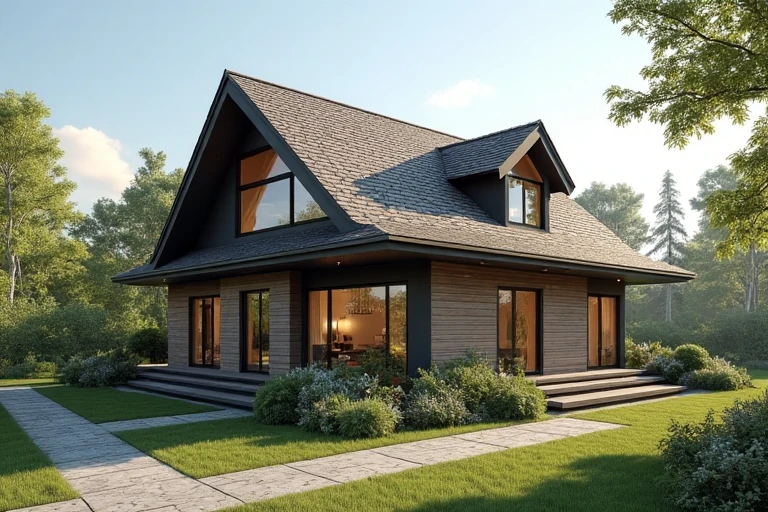
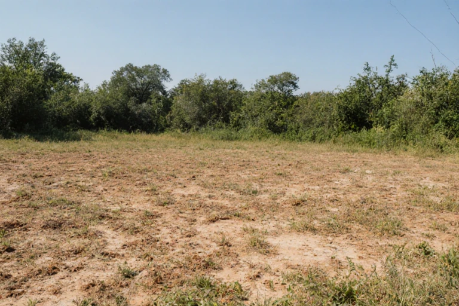
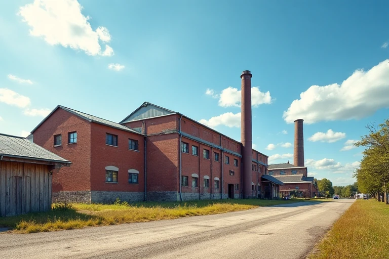
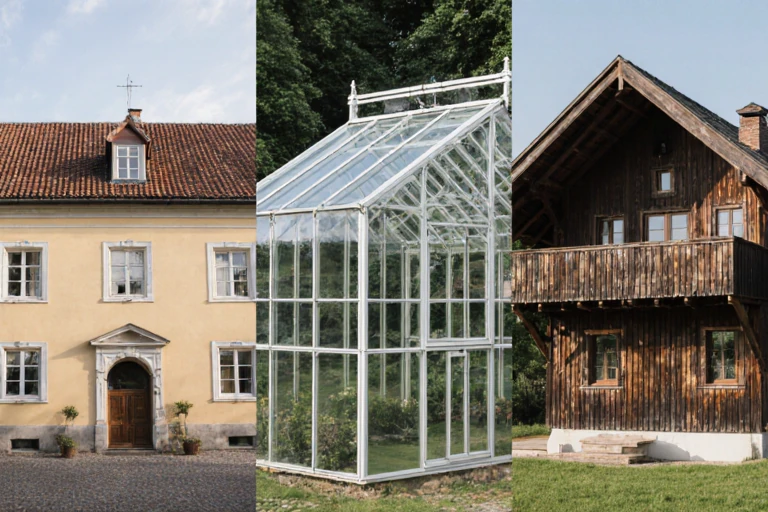

Podklady k vypracovaniu znaleckého posudku

Byt, nebytový priestor
- Doklad o veku domu, v ktorom sa nachádza byt (vydáva správca objektu).
- Doklad o vlastníctve - výpis z katastra nehnuteľností - z listu vlastníctva (LV); prípadne úplný výpis z pozemkovej knihy.
- Aktuálna kópia príslušnej katastrálnej mapy, ak ju nie je možné stiahnuť zo stránky katastrálneho úradu.
- Nadobúdacie doklady vlastníka uvedeného v aktuálnom LV - doklad o poslednom prevode alebo prechode (kúpna zmluva, zmluva o prevode vlastníctva, darovacia zmluva, dedičské rozhodnutie, zámenná zmluva...).
- Nákres bytu alebo pôdorys s rozmermi jednotlivých miestností.
- Informácia z územného plánu o záväzných regulatívoch priestorového usporiadania a funkčného využitia pozemkov.
- Pri rozostavaných stavbách je potrebné podklady konzultovať so znalcom.

Rodinný dom (chata, rekreačný dom a chata, záhradná chata)
- Doklad o vlastníctve - výpis z katastra nehnuteľností - z listu vlastníctva (LV); prípadne úplný výpis z pozemkovej knihy.
- Aktuálna kópia príslušnej katastrálnej mapy, ak ju nie je možné stiahnuť zo stránky katastrálneho úradu.
- V prípade neaktuálnosti kópie z katastrálnej mapy geometrický plán potvrdený katastrálnym úradom.
- Nadobúdacie doklady vlastníka uvedeného v aktuálnom LV - doklad o poslednom prevode alebo prechode (kúpna zmluva, zmluva o prevode vlastníctva, darovacia zmluva, dedičské rozhodnutie, zámenná zmluva...).
-
Stavebno-právna dokumentácia stavieb a pozemkov.
- Územné rozhodnutie, stavebné a kolaudačné rozhodnutie, povolenie stavebných zmien (právoplatné, s vyznačením právoplatnosti).
- Projektová dokumentácia stavieb; resp. zameranie skutkového stavu.
- Kúpnopredajné zmluvy, dedičské rozhodnutia, vyjadrenia štátnych orgánov a pod., pridelenie súpisného čísla, znalecké posudky vypracované v minulosti.
- Užívacie povolenia prístavieb, nadstavieb a rekonštrukcií.
- Informácia z územného plánu o záväzných regulatívoch priestorového usporiadania a funkčného využitia pozemkov.
- Pri rozostavaných stavbách je potrebné predložiť projekt pre stavebné povolenie overený stavebným úradom.

Pozemok
- Doklad o vlastníctve - výpis z katastra nehnuteľností - z listu vlastníctva (LV); prípadne úplný výpis z pozemkovej knihy.
- Aktuálna kópia príslušnej katastrálnej mapy, ak ju nie je možné stiahnuť zo stránky katastrálneho úradu.
- V prípade neaktuálnosti kópie z katastrálnej mapy geometrický plán potvrdený katastrálnym úradom.
- Informácia z územného plánu o záväzných regulatívoch priestorového usporiadania a funkčného využitia pozemkov alebo územné rozhodnutie alebo stavebné povolenie.
- Ak je predmetom ohodnotenia pozemok, ktorý vznikol rozčlenením na základe geometrického plánu, je potrebné predložiť aj geometrický plán potvrdený katastrálnym úradom.

Prevádzkový objekt
- Doklad o vlastníctve - výpis z katastra nehnuteľností - z listu vlastníctva (LV); prípadne úplný výpis z pozemkovej knihy.
- Aktuálna kópia príslušnej katastrálnej mapy, ak ju nie je možné stiahnuť zo stránky katastrálneho úradu.
- V prípade neaktuálnosti kópie z katastrálnej mapy geometrický plán potvrdený katastrálnym úradom.
- Nadobúdacie doklady vlastníka uvedeného v aktuálnom LV - doklad o poslednom prevode alebo prechode (kúpna zmluva, zmluva o prevode vlastníctva, darovacia zmluva, dedičské rozhodnutie, zámenná zmluva...).
-
Stavebno-právna dokumentácia stavieb a pozemkov.
- Územné rozhodnutie, stavebné a kolaudačné rozhodnutie, povolenie stavebných zmien (právoplatné, s vyznačením právoplatnosti).
- Projektová dokumentácia stavieb; resp. zameranie skutkového stavu.
- Kúpnopredajné zmluvy, dedičské rozhodnutia, vyjadrenia štátnych orgánov a pod., pridelenie súpisného čísla, znalecké posudky vypracované v minulosti.
- Informácia z územného plánu o záväzných regulatívoch priestorového usporiadania a funkčného využitia pozemkov.
- Nájomné zmluvy
- Poistné zmluvy - suma za ročné poistenie nehnuteľností (stavieb)
- Zmluvy o zradení vecných bremien
- Zmluvy o správe nehnuteľností
- Iné zmluvy obmedzujúce užívanie nehnuteľností; resp. zmluvy spojené s užívaním nehnuteľností (napr. predkupné práva a pod.).
- Zmluvy o službách spojených s údržbou nehnuteľností alebo prehlásenie, že nie sú uzatvorené.
- Daňový výmer k dani z nehnuteľností za predchádzajúce obdobie (ročný) alebo záväzné nariadenie obce o dani z nehnuteľností.
- Ročné náklady na prevádzku stavieb - nehnuteľností - elektrická energia, zemný plyn, dodávka tepla, dodávka TV SV, likvidácia odpadov a iné.

Iná stavba
- Individuálne komunikovať so znalcom.